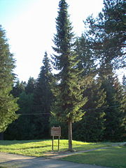
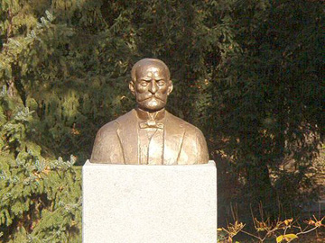
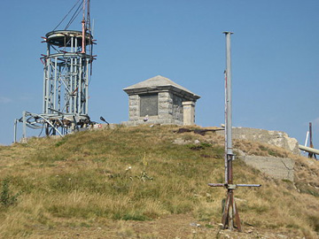
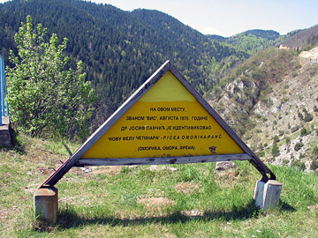

Josif Pančić (Ugrini kod Bribira, 17. april 1814 — Beograd, 8. mart 1888) je bio srpski lekar, botaničar i prvi predsednik Srpske kraljevske akademije. Otkrio je novu vrstu četinara koja je po njemu nazvana Pančićeva omorika, a po njemu je nazvan i najviši vrh Kopaonika (Pančićev vrh) na kome se nalazi mauzolej sa njegovim posmrtnim ostacima.
Pančić je rođen u selu Ugrini kod Bribira, u Vinodolu, Hrvatska (u to vreme Austrijsko carstvo), u katoličkoj porodici kao četvrto dete Pavla i Margarite. Prema predanju, Pančići su poreklom iz Hercegovine i od davnina su se doselili u selo Ugrini, koje se nalazi na severnim ograncima Velebita u sastavu Vinodolske opštine.
Roditelji su mu bili siromašni, a stric mu je bio u Gospiću arhiđakon, te ga je on sebi uzeo i o njegovom se školovanju starao. Osnovnu školu izučio je u Gospiću u Lici, a gimnaziju u Rijeci. Iz Rijeke je Josif prešao u Zagreb (1830) da nastavi školovanje u visokoj školi Regia Academica Scientiarum. U dodiru sa nekim Mađarima saznao je da u Pešti postoji Medicinski fakultet, na kome se u to vreme održavala i nastava iz prirodnih nauka, i zaželi da tamo nastavi svoje studije gde je završio medicinski fakultet i postao je doktor medicine 7. septembra 1842. godine izradivši tezu Taxilogia botanica, koju je posvetio svome stricu Grguru. Pančić je tokom studija u Pešti morao privatno zarađivati, dajući časove iz francuskog i italijanskog jezika. To mu je odnosilo mnogo vremena i usled toga se njegovo studiranje proteglo na 10 godina.
Nije želeo da stupi u državnu službu i rešio je da radi privatno kao lekar. Ali, od lekarske prakse nije mogao živeti, jer nije imao dovoljno pacijenata, a i oni što su dolazili bili su većinom siromašni. Proveo je dve godine u Ruksbergu u Banatu, gde je se bavio i vaspitanjem dece vlasnika tamošnjih rudnika Hofmanova. Za to vreme je upoznao floru Banata, obišao je i Deliblatsku peščaru i peo se na Karpate, a u rudnicima je upoznao mnoge interesantne stene i minerale. Prikupio je dosta interesantnih biljaka iz flore Banata. Posle dve godine otišao je u Liku da poseti svoga strica i dobrotvora Grgura i brata Matu. Tu je pravio izlete po okolini, peo se na Velebit i prikupio dosta biljaka iz flore Primorja. Odatle se uputio u Beč da dovrši odredbu svoga herbara, koji je oko Pešte, Budima, i po Erdeljskim i Banatskim Alpima sakupio, a ujedno i da bolje Jestastvenicu prouči. U bečkom Prirodnjačkom muzeju je proučio i odredio svoje prikupljene biljke, a u isto vreme je pratio i predavanja čuvenog botaničara Endlera. U Beču se zadržao godinu dana. Baveći se u Beču on se upoznao sa Miklošićem i Vukom Karadžićem; Vuk ga uputi u Srbiju da stupi u državnu službu. Čekajući da Vuk dobije novčanu pomoć od Rusije (a koju na kraju nije ni dobio), Pančić je gotovo bio na izmaku svoga novca i to je priznao Vuku. Vuk mu je tada savetovao da odmah krene u Srbiju i da traži postavljenje u Užicu.
Pančić je poslušao Vuka i došao u Srbiju meseca maja 1846. godine za vreme vladavine kneza Aleksandra Karađorđevića. Ali, kako je Vuk imao u Srbiji i dosta neprijatelja, njegova preporuka nije vredela ništa, pa je čak zbog toga i zbog želje da bude postavljen u Užicu, u čijoj se okolini skrivao veliki broj protivnika Karađorđevića, Pančić postao sumnjiv i nije mogao dobiti to mesto. Čekajući na postavljenje, obilazio je užički kraj, i bavio se izučavanjem biljnog sveta. Pančić je gotovo ostao bez sredstava za život i pomišljao je da se vrati, no u tome momentu dobije poziv od Avrama Petronijevića, ministra inostranih poslova, koji je imao fabriku stakla u neposrednoj okolini Jagodine u Belici, da se privremeno primi za lekara u tome mestu i da kao lekar radi na suzbijanju zaraze trbušnog tifusa, koja se širila među radnicima fabrike. Pančić je pristao, bio na toj dužnosti pola godine i sa uspehom je završio svoj posao.
Baveći se tamo on se upozna sa letnjom i jesenjom florom Jagodine, Belice i Crnoga Vrha. Stanovnici Jagodine su zavoleli Pančića kao savesnog lekara i plemenitog čoveka i kada je Pančiću ponuđeno mesto za fizikusa u Negotinu, Jagodina je tražila da zadrži Pančića. U tome je i uspela i Pančić je u februaru 1847. godine postavljen za kontraktualnog lekara i fizikusa jagodinskog okruga, ali prošle godine započeta ispitivanja nastavio je, obiđe Temnić, Levač u okolini Oparića (i Preveško jezero) i manastir Ljubostinje. Oko polovine juna ode u Aleksinačku Banju odakle se prvi put pope na Rtanj i Ozren. Iste godine je zatražio otpust iz austrougarskog podanstva i zatražio prijem u srpsko podanstvo. Krajem iste godine dobio je premeštaj u Kragujevac i postavljen je na upražnjeno mesto za privremenog okružnog fizikusa 12. novembra 1847. godine. Za vreme bavljenja u Jagodini Pančić je odlazio i u Ćupriju i tu je upoznao Ljudmilu, ćerku barona inženjera Kordona, koju je zatim kao lekar u Kragujevcu isprosio i u januaru 1849. godine se venčao u pravoslavnoj crkvi u Ćupriji.
Iduće godine, 8. januara 1850. godine primljen je za člana Društva srpske slovesnosti, a y 1853. godine je postavljen za profesora prirodnih nauka u Liceju, najpre za kontraktualnog profesora, a kada je 1854. godine primljen u srpsko podanstvo, dr Josif Pančić je postavljen za redovnog profesora u Liceju. Primljen je za člana Društva srpske slovesnosti i postavljen je za profesora u Liceju, iako do tada nije, sem doktorske disertacije, imao nijedan publikovan naučni rad. Postavljen je za profesora samo na osnovu saznanja i uverenja da je on najbolji poznavalac flore Srbije.
Godine 1855. Pančić je prvi put čuo da u Zapadnoj Srbiji postoji posebna vrsta četinara - omorika. Deset godina kasnije je dobio dve njene grane. Trebalo je da prođe još deset godina da na planini Tari, u zaseoku Đurići, 1. avgusta 1877. (Prema nekim izvorima 1875.?). pronađe do tada nepoznati četinar - omoriku koja je po njemu dobila ime - Pančićeva omorika (Picea omorika (Pančić) Purkyne) Tokom svoga višegodišnjeg rada otkrio je 102 i opisao oko 2.500 biljnih vrsta. U Liceju i docnije u Velikoj školi Pančić je ostao do kraja života. Po njemu je nazvana i Pančićeva potočarka.
Bio je član u sledećim učenim društvima:
Dopisni član:
|  |  |  |
| Spomenik Josifu Pančiću | Pančićev vrh - mauzolej | Mesto gde je Pančić otkrio omoriku |